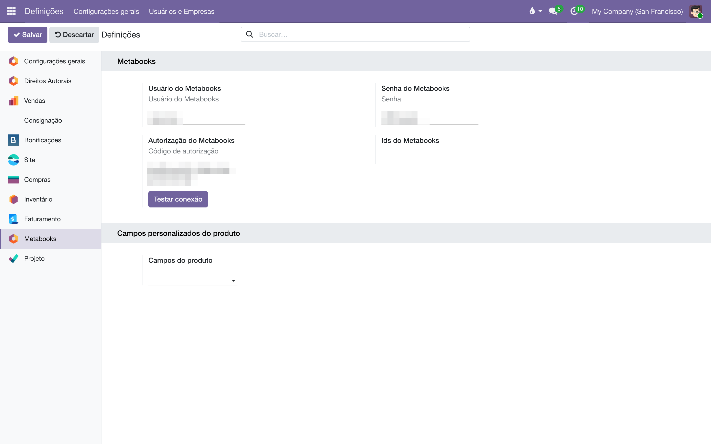
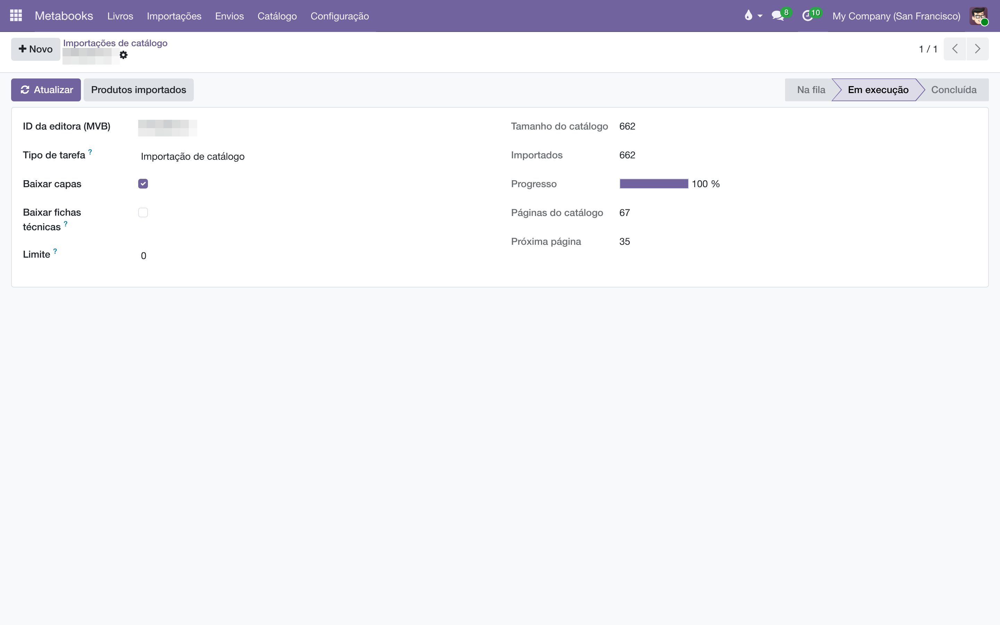
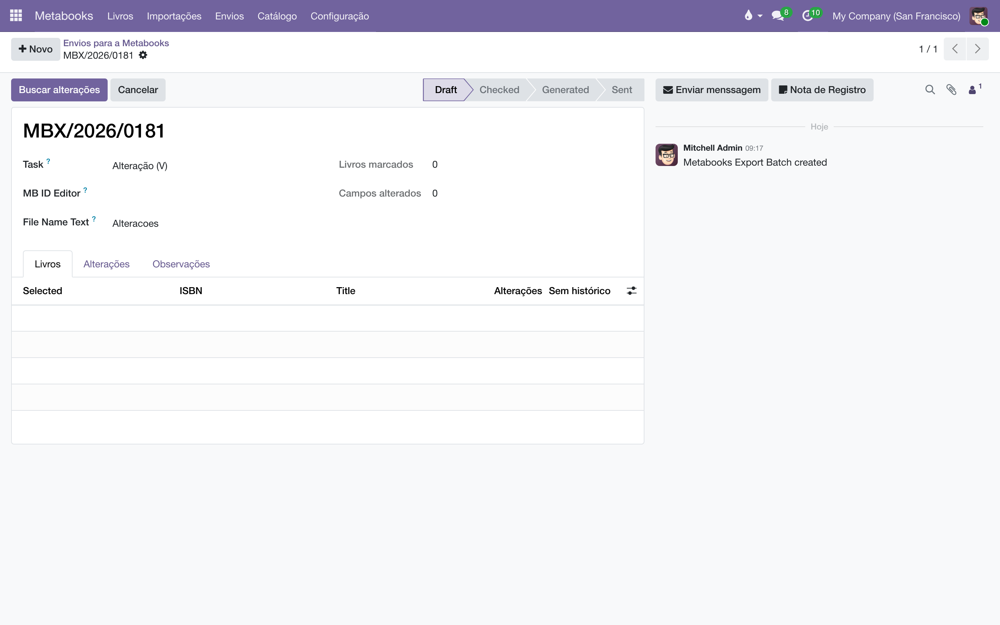

Os metadados dos seus livros — título, autores, sinopse, preço, medidas, capa — entrando no sistema direto da Metabooks, por ISBN ou por catálogo inteiro, sem digitação.
A Metabooks é a plataforma brasileira de metadados do mercado editorial (da MVB): é nela que editoras cadastram seus títulos no padrão ONIX, e é dela que livrarias e distribuidores leem esses dados. Este módulo conecta o sistema à Metabooks em duas direções:
Cada livro importado vira um produto comum do sistema, com o ISBN como código interno e código de barras. É esse mesmo ISBN que casa o livro com os itens das notas fiscais importadas e com o resto da casa: a Metabooks alimenta o catálogo, e o catálogo alimenta a consignação, a bonificação e as vendas.
Tudo mora no aplicativo Metabooks do menu principal: Livros (os produtos importados), Importações, Envios, Catálogo (autores, códigos BISAC, disponibilidades, editoras) e Configuração.
Ainda nessa página, o bloco Custom Product's Fields permite escolher, em Product Fields, quais campos do produto aparecem na página pública do livro no site.
Acesso. Os botões de sincronização no formulário do produto pedem o grupo Acesso ao Metabooks (em , seção Metabooks Access). Os menus de configuração são de administrador.
As credenciais valem para a conta toda — não há nada a configurar por empresa. Elas nunca entram em relatórios nem em testes; ficam guardadas nos parâmetros do sistema.

O caminho para poucos títulos — um lançamento, uma lista que chegou por e-mail:
Ao final, o sistema abre a lista dos livros trazidos e resume o resultado: quantos são novos, quantos foram atualizados e quantos não foram encontrados na Metabooks. A importação é segura de repetir: um livro que já existe (mesmo ISBN) é atualizado, nunca duplicado.
A importação por ISBN traz o registro completo: ficha editorial, autores com seus papéis, sinopse, preço de capa, capa e a ficha técnica inteira (medidas, peso, páginas, acabamento, NCM, idiomas).
Para trazer (ou ressincronizar) tudo de uma vez:
BR0089701.Acompanhe em : cada registro mostra o tamanho do catálogo, quantos livros já entraram e a barra de progresso. O processamento salva o avanço a cada página — se for interrompido, retoma sozinho de onde parou. Os botões Executar agora, Atualizar e Reexecutar fazem o que dizem.
O catálogo (feed) da Metabooks não carrega a ficha técnica — medidas, peso, páginas, acabamento e NCM só existem no registro individual de cada ISBN. Marcando Baixar fichas técnicas, o sistema encadeia automaticamente um segundo trabalho que completa cada livro, um ISBN por vez, sem tocar em preço, nome, categoria nem capa. É mais lento; deixe correr em segundo plano.
Também dá para disparar do cadastro da editora: no contato, o grupo Product lista os IDs Metabooks da editora, cada um com o botão Import Catalogue.

| Na Metabooks | No sistema |
|---|---|
| Título, subtítulo e autores | Nome do produto no formato "Título: Subtítulo (Autor; Autor)" — do jeito que a equipe procura o livro — mais os campos separados de título e subtítulo. |
| Contribuidores (autor, tradutor, organizador, ilustrador…) | Cadastro de autores com papel, ordem e nota biográfica, ligado ao livro. Consultável em . |
| Preço de capa | Preço de venda do produto. |
| Sinopse | Campo Sinopse da aba Metabooks do produto. |
| Capa | Imagem do produto. |
| Selo e coleção | Categoria do produto, na árvore Selo / Coleção — selos e coleções nunca se misturam. |
| Palavras-chave e assuntos | Marcadores do produto (somados aos que já existiam, nunca apagando os manuais). |
| Disponibilidade (ONIX) | Situação legível ("Em estoque", "Esgotado"…), com filtros prontos de disponível/indisponível. Tabela em . |
| Ficha técnica ONIX | Aba Ficha técnica do produto: formato, acabamento, altura, largura, lombada, peso, orelhas, sobrecapa, fitilho, páginas (miolo, pré e pós-textuais), ilustrações, edição, idiomas, NCM, cidade e país de publicação, status de publicação. |
| Tipo de produto | Livro impresso, e-book ou audiolivro — com filtros prontos na busca. Impressos entram com controle de estoque ligado; digitais, sem. |
Todo produto importado ganha duas abas — Metabooks (dados editoriais e comerciais) e Ficha técnica (a especificação física, a mesma de que uma gráfica orça) — e dois botões no topo, para quem tem o grupo de acesso:
A busca de produtos também aprende com a integração: dá para procurar por autor, editora, selo e tipo de livro, e agrupar por qualquer um deles.
Esta frente está funcional até a geração da planilha, mas a entrega à Metabooks ainda é manual: o sistema não sobe o arquivo sozinho (nem por FTP, nem por API — o transporte automático depende de liberação da própria Metabooks). Baixe a planilha gerada, envie pelo canal combinado com eles e só então marque o envio como concluído. As tarefas de arquivamento (X) e reativação (R) existem na tela, mas ainda não foram exercitadas em produção.
A lógica: quando alguém edita, em um livro, um campo que a Metabooks conhece (título, sinopse, preço, medidas, autores…), o livro entra numa fila de pendências. De tempos em tempos, alguém junta as pendências num envio, confere o antes/depois de cada alteração e gera a planilha no formato que a Metabooks aceita.
.xlsx sai com o nome que a Metabooks espera (por exemplo V_BR5108985_20260720_Alteracoes.xlsx) e com as células alteradas em vermelho — a própria planilha é o documento de conferência: o que está vermelho é o que estamos pedindo para mudar.O histórico fica: lista, campo a campo, tudo o que já foi pedido à Metabooks, em qual envio e com qual antes/depois.

A atualização na Metabooks é incremental: a planilha leva só o ISBN, o título (para a linha ser legível) e as colunas que mudaram — o que não vai na planilha permanece intocado lá. Das 74 colunas do modelo oficial, o sistema sabe preencher as que de fato existem no cadastro daqui; as demais nunca são escritas.
| Regra | O que ela garante |
|---|---|
| Um livro por ISBN | Importar de novo atualiza, nunca duplica. O ISBN é a identidade do livro em todo o sistema. |
| Importação não gera pendência de envio | Os dados que a própria Metabooks mandou não voltam para ela: só edições feitas por pessoas marcam o livro como pendente. |
| O segundo envio leva só o que mudou | Cada envio registra um marco no histórico do livro; o próximo parte dali. Editar e desfazer no meio do caminho não gera envio de nada. |
| Livro sem histórico legível vai completo | Se não há como saber o que mudou (coluna Sem histórico na tela do envio), todas as colunas mapeadas são enviadas — melhor do que uma linha vazia. |
| Envio concluído é definitivo | Um envio marcado como enviado não pode ser cancelado nem reaberto: ele é o registro do que foi pedido à Metabooks, e fica. |
| Marcadores e capas preservados | A importação soma marcadores sem apagar os manuais; a atualização de ficha técnica nunca toca preço, nome, categoria ou capa. |
"Set the Metabooks username and password…" ao importar. As credenciais não estão salvas. Volte a Configuração, preencha usuário e senha e use Testar conexão.
ISBN não encontrado. O resumo da importação lista os ISBNs que a Metabooks não conhece. Confira a digitação; se o número estiver certo, o título ainda não foi cadastrado lá pela editora responsável.
A importação de catálogo parou em "Falhou". Abra o registro em Importações de catálogo: o campo Mensagem traz o motivo (credencial expirada, ID de editora errado, instabilidade da API). Resolvida a causa, Reexecutar recomeça do zero com segurança — o que já entrou será apenas atualizado.
Livros do catálogo vieram sem medidas ou sem autores. É a limitação do feed: ele não carrega ficha técnica, e traz menos dados editoriais que o registro individual. Rode a importação com Baixar fichas técnicas marcado, ou reimporte os títulos por ISBN.
"Verificar" reclamou de um campo apagado. Apagar um dado na Metabooks exige uma marca de exclusão que o envio ainda não escreve. Ou devolva o valor ao campo, ou deixe esse livro fora do envio e faça a exclusão diretamente no painel deles.
Veja também
A camada HTTP é mockada num único ponto:
metabooks.connector._get_client é substituído por um
cliente falso, então nenhuma credencial de
ir.config_parameter é lida e nenhuma chamada de rede
acontece. Verifica-se o parsing + upsert: dado um payload conhecido
da API, os campos metabooks_* corretos são gravados no
produto (import por ISBN, idempotência, "não encontrado" e import
de catálogo de editora). Rodar:
odoo -d testing -u liber_metabooks_integration \ --test-enable --test-tags '/liber_metabooks_integration:TestMetabooksSync' \ --http-port=8072 --stop-after-init
Para exercitar a integração de ponta a ponta contra a API real —
por exemplo o catálogo da editora BR0089701 (um id
VL / mvbId, não um ISBN):
ir.config_parameter e
nunca no código nem no repositório.BR0089701, ou dispare um
metabooks.import.job para o catálogo completo
(roda em segundo plano, retomável).Este passo depende de credencial válida e de rede, por isso fica fora do teste automático — é uma verificação humana, sob demanda.
Manual completo, com busca e as demais páginas: Integração Metabooks.